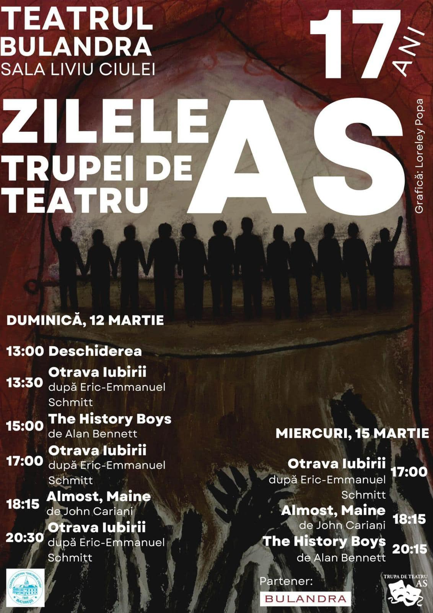

Cu o istorie de peste 15 ani, Trupa de Teatru AS este una dintre cele mai notabile trupe de teatru de liceu din București și una dintre activitățile extrașcolare cu cea mai lungă vechime din Lazăr (după Revista LZR, desigur). În același timp, Trupa AS este locul unde peste 40 de elevi și-au găsit o a doua familie.
